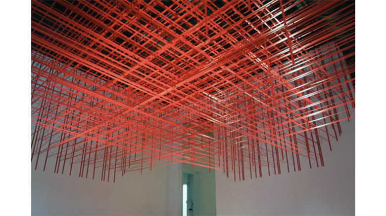

idea

Rebecca Ward
http://beautifuldecay.com/2013/04/04/rebecca-wards-intricate-tape-installations/-どんな人
NYで活躍するまだ30代前半の若いアーティストです。ビニールテープを使ったインスタレーション作品を多く作っています。
-解説
水平垂直に貼られた赤いビニールテープが天井で工作して不思議な形を作っている作品です。ビニールテープとは思えないほどに、高い制度で貼り付けられており、躍動感があふれる空間を作っています。
-好きなところ
ビニールテープは工作などにもよく用いられ、悪く言えば安っぽい印象を与えかねない素材ですが、この作品では、端の部分をまっすぐ切って、水平垂直に揃えて貼り付けることで、ビニールテープの光沢感が際立ち、とてもスタイリッシュでかっこいい作品になっています。